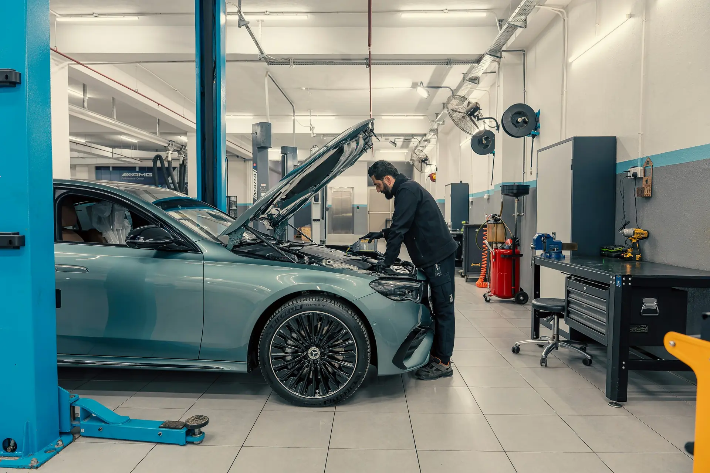
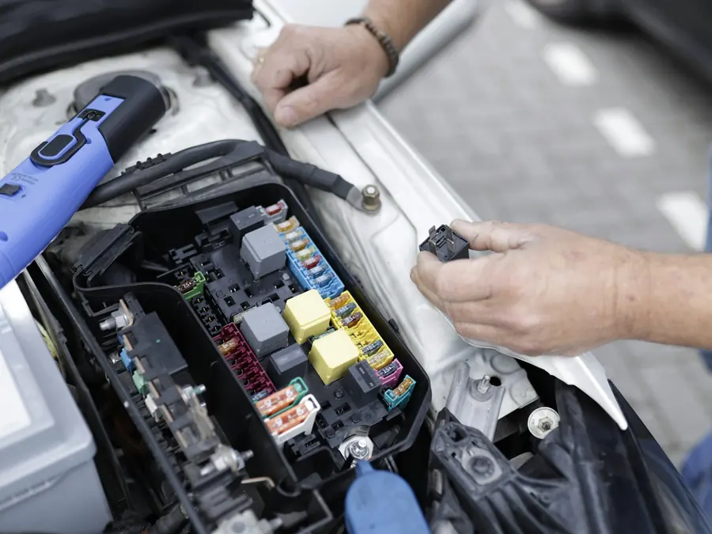
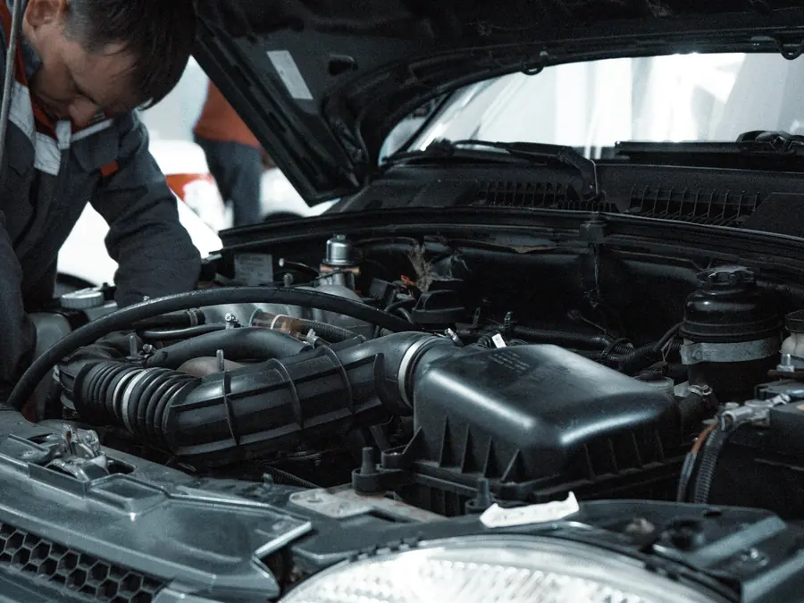
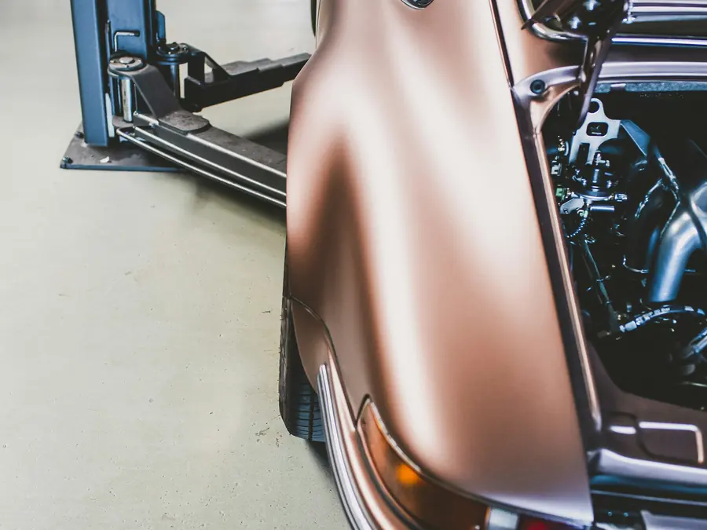
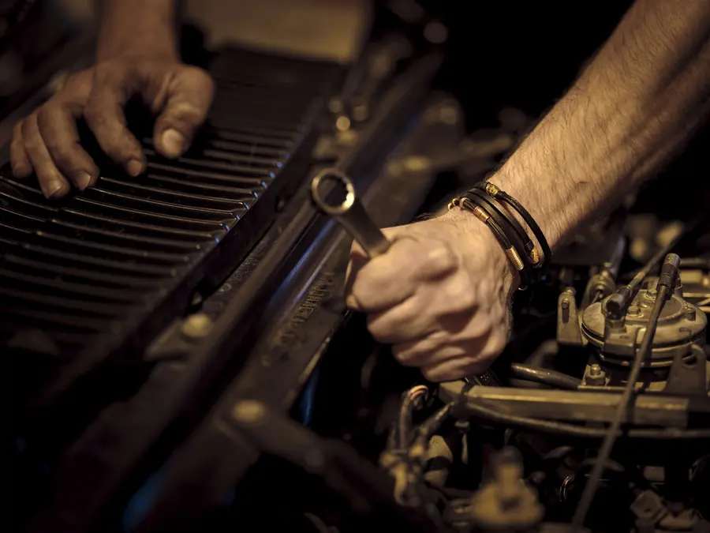

Megbízható autószerelő Pécs belvárosában
Pécs központjában, a Tompa Mihály utcában várjuk kedvezményes árakkal és megbízható, minőségi munkával.
Amiben segítünk
Kis belvárosi műhely: megkeressük a hibát, elmondjuk, mi a gond, és megjavítjuk.

Hibakeresés
Ha az autó régóta furcsán viselkedik, és máshol nem találták meg az okát, nálunk végigkeressük.

Javítás, szerviz
Általános autójavítás és karbantartás: előre elmondjuk, mit cserélünk és miért.

Régebbi autók
Az évek óta használt, régebbi autókat is vállaljuk, nem csak a pár éves típusokat.

Nehezen beszerezhető alkatrész
Ha az alkatrészt már nem gyártják, kapcsolatainkon keresztül bontottat is felkutatunk.
Ha a hiba nem a mi szakterületünk (például bonyolult elektronikai hiba), őszintén megmondjuk, és ajánlunk egy szakembert, akiben megbízunk.
Mit vett észre az autón?
A hibát gyorsabban megtaláljuk, ha tudjuk, mikor jelentkezik. Kattintson arra, ami igaz, és a jegyzetet elküldheti a visszahívás-kéréssel.
Mit tapasztal?
Válasszon, akár többet is:
Mikor jelentkezik?
Mióta?
Ezért jönnek vissza
4,8
38 értékelés a Google-on
- Korrekt, nem lehúzós
- Elmondják, mi a hiba
- A régóta fennálló hibát is megtalálják
- Alkatrészt is felkutatnak
„Végre tíz év után találtam egy autószerelőt, akiben megbízom és a közelben van. Szimpatikus, korrekt, profi, körültekintő, informatív és nem lehúzós! Nőként sem kellett úgy éreznem, hogy hülyének néznek, átvernek.”
„Több mint 200 km-t utazok, hogy itt csinálják meg az autóm. Miért? Mert megbízom bennük.”
Gyakori kérdések
Ha nem találja itt a választ, hívjon nyugodtan.
Hol található az Atom Autószerviz?
Pécs belvárosában, a Tompa Mihály utca 32. szám alatt (7623 Pécs).
Mikor vannak nyitva?
Hétfőtől péntekig 8:00 és 17:00 között. Hétvégén zárva vagyunk.
Régebbi autót is javítanak?
Igen. Vendégeink közül többen régebbi autóval járnak hozzánk, és olyan hibát is megoldottunk már, amivel az autó évek óta küszködött.
Mi a helyzet, ha az alkatrészt már nem gyártják?
Kapcsolatrendszerünkön keresztül bontott alkatrészt is fel tudunk kutatni, ha újat már nem lehet kapni.
Hogyan kérhetek időpontot?
Hívjon a 06 20 527 4293-as számon, vagy kérjen visszahívást az oldalon: megadja a nevét és a telefonszámát, és munkaidőben visszahívjuk.
Kérjen visszahívást
Írja le röviden, mit tapasztal. Munkaidőben visszahívjuk, és megbeszéljük, mikor hozza az autót.
Kapcsolat
- 7623 Pécs, Tompa Mihály u. 32.Útvonaltervezés
- Telefon06 20 527 4293
- Facebookfacebook.com/AtomAutoszerviz
Nyitvatartás
| Hétfő | 8:00–17:00 |
| Kedd | 8:00–17:00 |
| Szerda | 8:00–17:00 |
| Csütörtök | 8:00–17:00 |
| Péntek | 8:00–17:00 |
| Szombat–vasárnap | zárva |